AI加速器的崛起正在重塑计算系统的形态。当旗舰级超算系统越来越贵、越来越以AI为中心时，科学计算社区面临一个现实问题：原本为AI设计的张量加速器，能否有效运行科学计算负载？
来自鹏城实验室的研究团队在Ascend 910系列NPU上进行了系统性探索。他们从三个核心鸿沟（精度、执行、数据移动）出发，通过五个代表性应用案例，展示了在AI原生NPU上运行科学计算负载的可行性与优化路径。
论文首先识别了在AI加速器上运行科学计算负载面临的三类根本性挑战：
执行鸿沟（Execution Mismatch）：AI加速器擅长大规模稠密、规整、高算术强度的张量运算（Cube单元），但科学计算中大量存在的是内存受限、规约密集型或不规则操作，其性能不随张量吞吐量线性增长。
精度鸿沟（Precision Gap）：科学计算通常依赖FP64或数值稳定的FP32，而现代AI处理器从FP16/BF16低精度执行中获得效率优势。
数据移动鸿沟（Data-Movement Gap）：科学计算的多级数据重用、不规则控制流和通信密集型执行，与AI架构的显式管理内存层次和Tile中心执行模型不匹配。
Ascend 910系列基于DaVinci架构，每个AI Core包含一个Cube Core（稠密张量）和两个Vector Core（通用向量处理），配合软件管理的L0/L1/UB/L2/HBM多级内存层次。这种架构使得Cube友好型内核（如GEMM）受益巨大，而Vector主导或内存受限的内核则面临挑战。
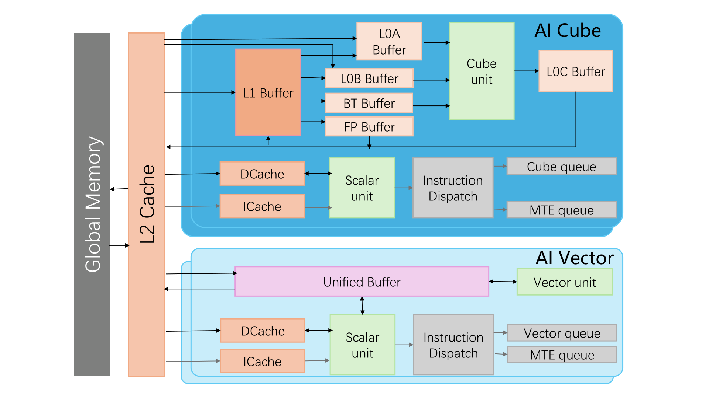
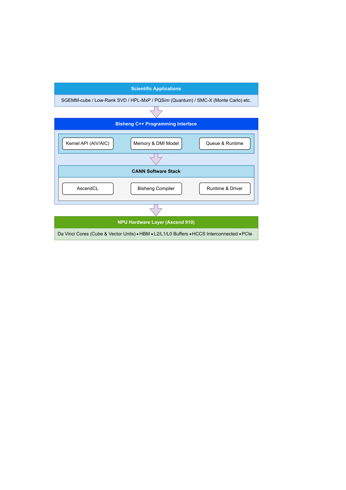
论文对代表性科学计算内核（GEMM、SYRK、GEMV、DOT等）进行了Roof-line模型分析。结果显示，GEMM类算子可以在Cube单元上达到compute-bound，而矩阵-向量运算（GEMV）等则受限于内存带宽，与问题规模无关地保持低算术强度。
这意味着科学计算内核在Ascend NPU上不会均匀受益：有些能充分利用Cube的吞吐量优势，有些则受限于Vector单元和内存层次。理解这种不对称性，是后续应用优化的基础。
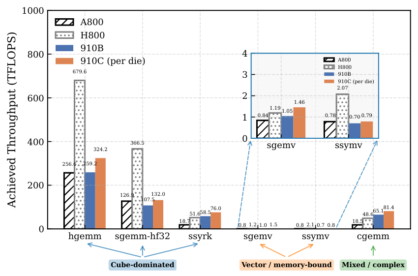
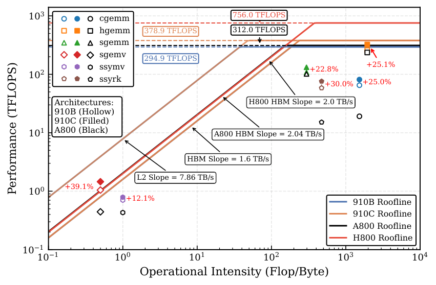
HPL-MxP（Mixed-precision HPL）是评估混合精度计算能力的HPC基准。论文在Ascend 910A上实现了CPU-NPU协同的混合精度方案：低精度LU分解在NPU的Cube单元上执行，高精度迭代求精在CPU上运行，两者通过异步通信重叠来隐藏数据传输开销。
在8卡Ascend 910A上，该方案实现了344.1 TFLOPS的有效FP64性能（MxP模式），混合精度求解器实现了1.08×10⁻¹² 的可靠残差。系统通过Sliding Window LU技术将通信与计算深度重叠，使通信开销仅占总执行时间的0.1-2%。
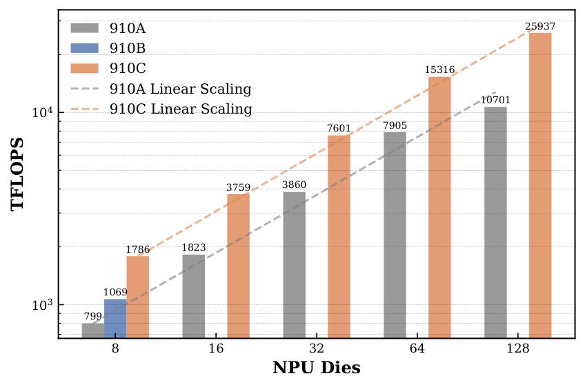
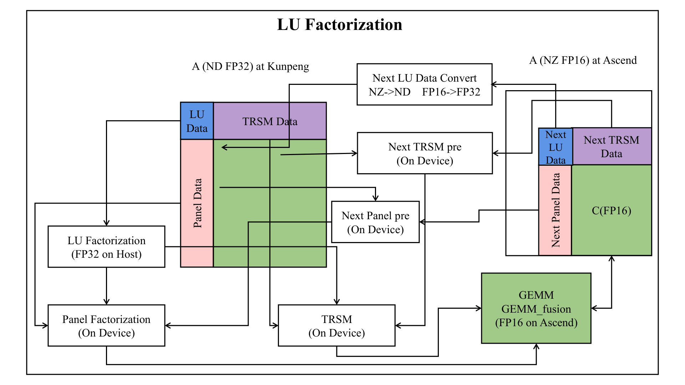
低秩SVD是科学计算和数据分析中的核心操作。论文设计了异构阶段放置方案：将精度敏感的阶段（如随机投影、QR分解）分配给CPU执行，精度容忍阶段（如矩阵乘法）分配给NPU的Cube单元。
在Ascend 910A上，LRSVD实现了315-530 GFLOPS的性能，与CPU基线相比加速2.5-4.5倍。热力图分析显示，NPU加速的矩阵乘法阶段占据了大部分计算时间，而CPU执行的精度敏感阶段在整体时间中占比很小。
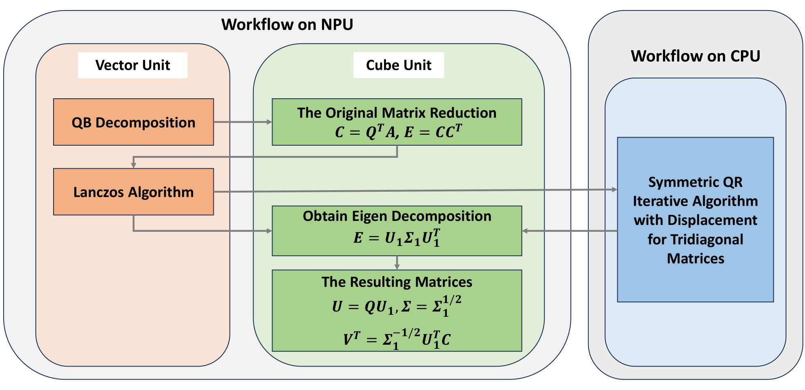
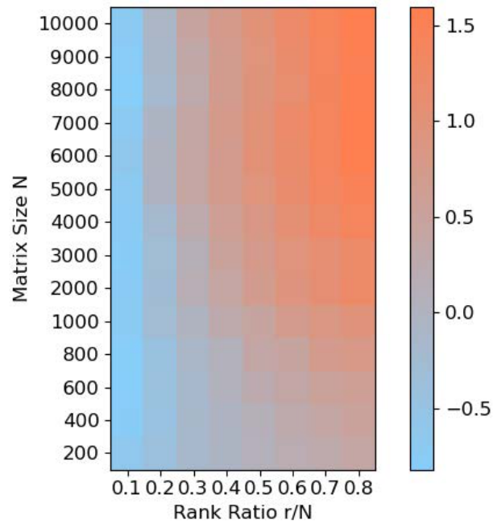
SGEMM-cube解决了一个核心问题：如何在仅支持FP16/BF16的Cube单元上实现FP32精度的矩阵乘法？ 方案是使用FP16输入调用Cube引擎，然后通过输出格式转换和误差校正来恢复FP32精度。
在Ascend 910A上，这种方法实现了2.5-3.5 TFLOPS的有效FP32性能，优于FP32在Vector单元上的直接执行。精度分析显示，基于FP16 Cube的模拟乘法与FP32参考值的相对误差在1×10⁻⁶ 量级，完全满足大多数科学计算应用的要求。
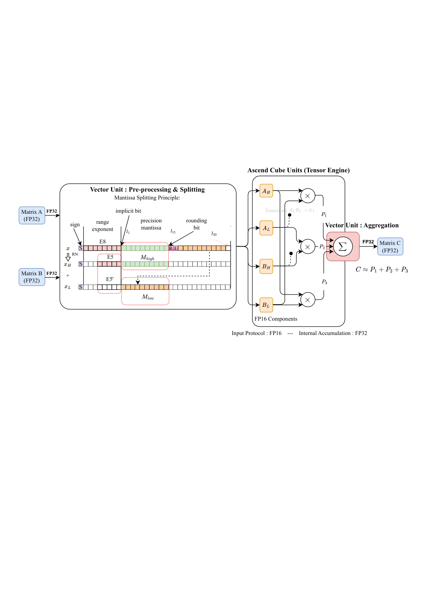
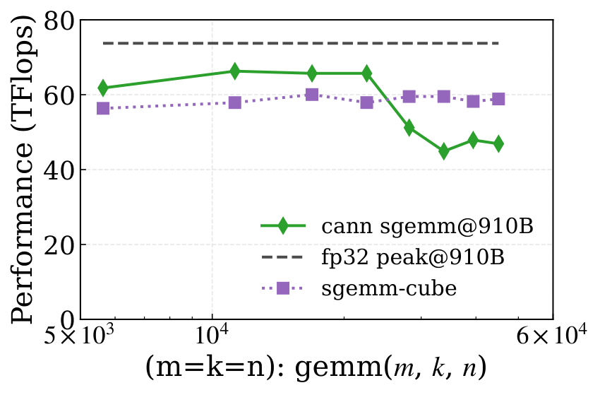
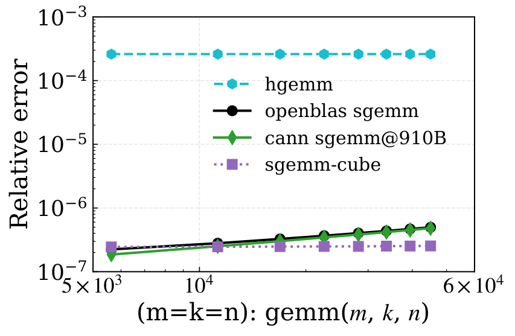
PQSim和SMC-X代表了带宽受限和不规则负载如何在AI NPU上运行。
PQSim（量子电路模拟）：这是一个带宽密集型负载，模拟量子态向量需要在内存中反复读写大规模状态向量。论文通过精心设计的数据布局和向量化指令，将量子门操作映射到Ascend的Vector单元，实现了与GPU基线可比的性能。在28-qubit规模下，单门操作延迟低于20μs，接近NVIDIA A100的水平。
SMC-X（序贯蒙特卡洛）：这是一个高度不规则的负载，包含动态粒子分裂、自适应重采样和可变工作负载。论文通过将不规则计算「规整化」为NPU友好的模式，利用Vector单元处理粒子操作，在Ascend 910A上实现了与CPU基线相比2-3倍的加速。
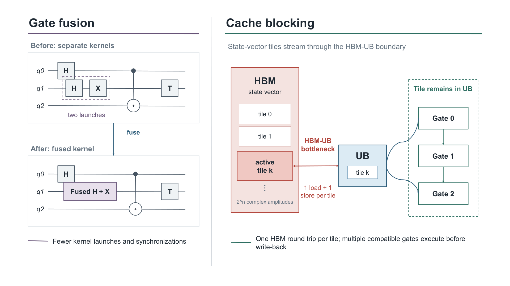
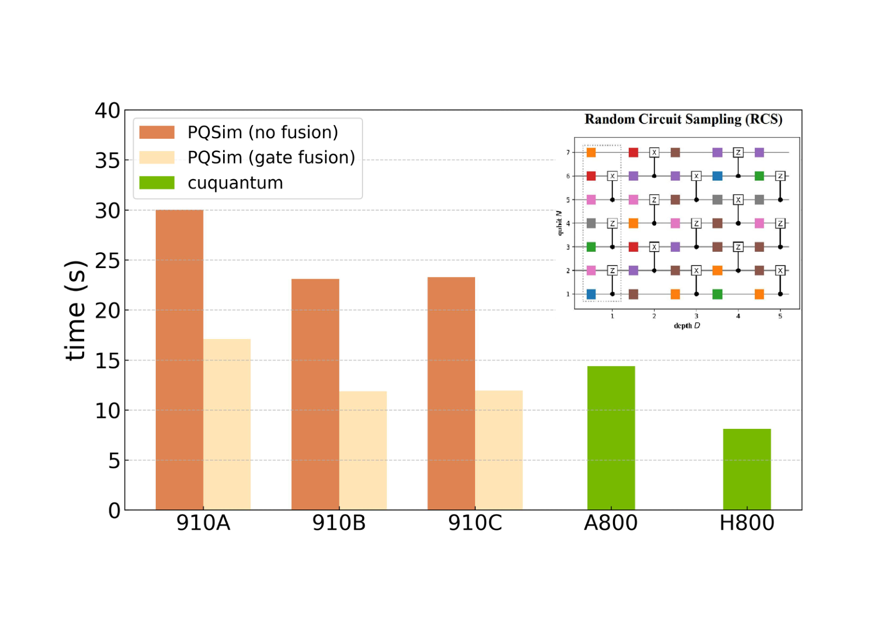
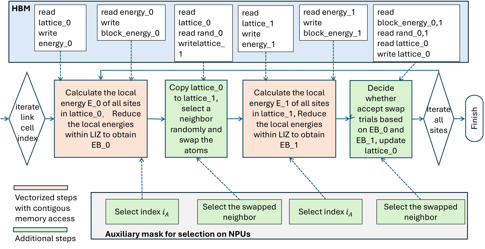
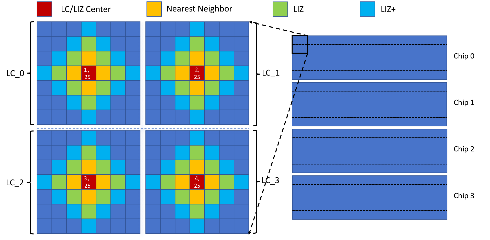
论文从五个应用案例中提取了可迁移的优化原则，这些原则不限于Ascend平台，也适用于其他张量中心型AI加速器：
精度感知的数值重构：通过混合精度策略（如迭代求精）或精度模拟（如FP16→FP32模拟），在低精度硬件上实现高精度结果。
异构执行放置：将精度敏感的阶段分配到高精度单元（CPU），精度容忍的阶段分配到高吞吐单元（NPU Cube）。
执行重构：将不规则计算规整化为张量友好的模式，或将带宽密集型计算通过缓存感知的Tile切分来匹配内存层次。
显式数据移动编排：通过软件管理的多级内存层次和通信-计算重叠，隐藏数据移动开销。
参考：https://arxiv.org/abs/2607.20120